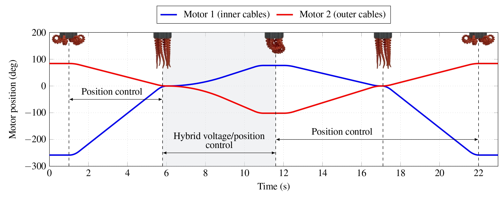
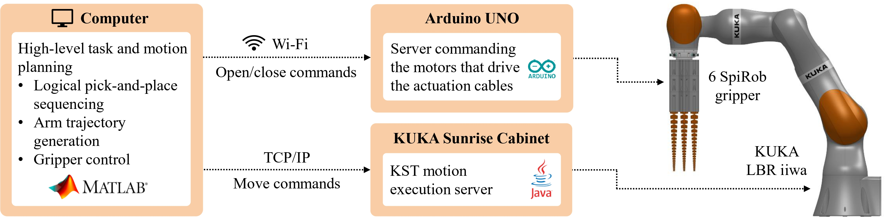
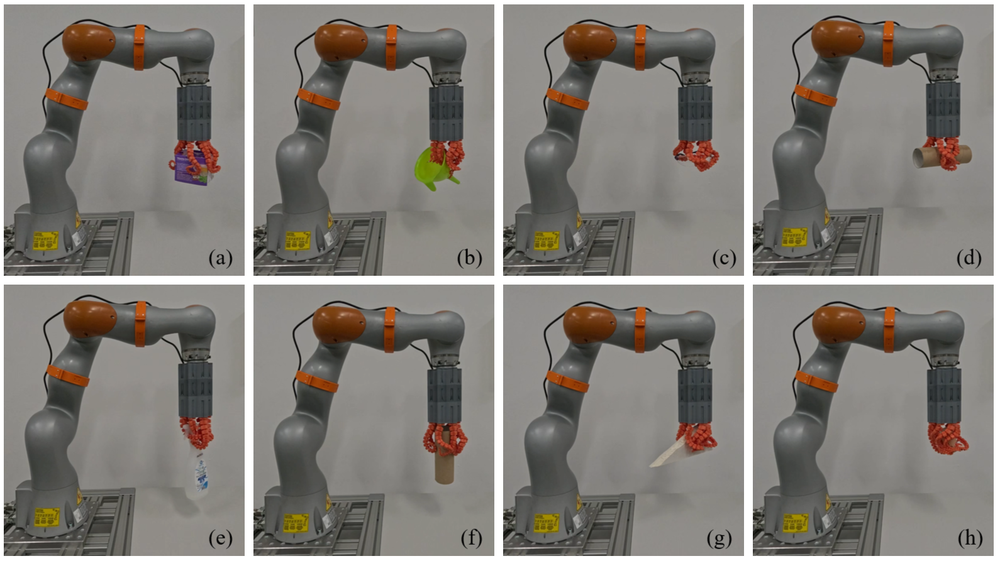
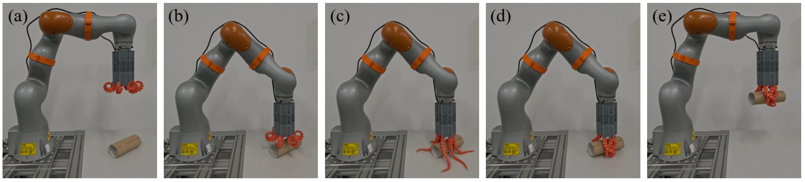

To create a functional octopus-inspired end-effector, we arranged six SpiRob tentacles in a circular configuration. Actuating this gripper requires routing 18 individual cables (3 per tentacle) to just two motors: one motor drives 12 inner cables, while the other drives the 6 outer cables. Since the system mounts directly to a robot's flange, minimizing its overall volume is crucial. To solve this spatial challenge, we designed a custom, 3D-printable modular housing. This stacked design neatly packages the complex routing pulleys, the two Dynamixel servomotors, and the Arduino control board into a highly compact, ready-to-mount unit.

The gripper transitions between three fundamental states: open (tentacles curled outward), neutral (tentacles hanging relaxed under gravity), and closed (tentacles curled inward). To achieve safe and adaptable grasping, we developed a hybrid position-voltage control strategy. This allows the inner and outer cables to work together, enabling the soft tentacles to gently conform to an object's geometry before applying a secure holding force.

To integrate the soft gripper with a commercial collaborative robot (KUKA LBR iiwa R820), we developed a centralized architecture where a host computer handles the high-level task and motion planning. The host sends move commands to the KUKA robot controller via TCP/IP, while simultaneously sending wireless open/close commands over Wi-Fi to the gripper's onboard Arduino server.

Our experimental tests demonstrate that the integrated system successfully performs dynamic pick-and-place operations on a wide variety of everyday objects. From delicate paper cups and glasses to irregularly shaped funnels and cardboard tubes in various orientations, the continuous deformation of the tentacles allows the gripper to securely wrap around challenging targets.


The fundamental SpiRob tentacle design used in this project was originally proposed in: Z. Wang, N. M. Freris, and X. Wei, "SpiRobs: Logarithmic spiral-shaped robots for versatile grasping across scales," Device, vol. 3, no. 4, p. 100646, 2025. https://doi.org/10.1016/j.device.2024.100646